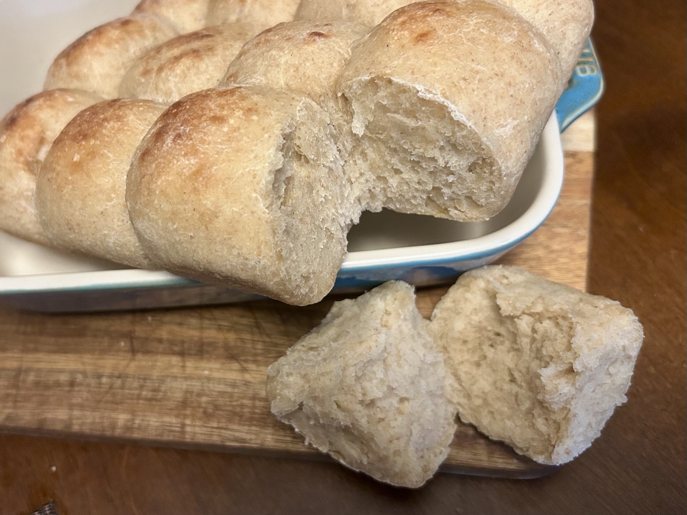
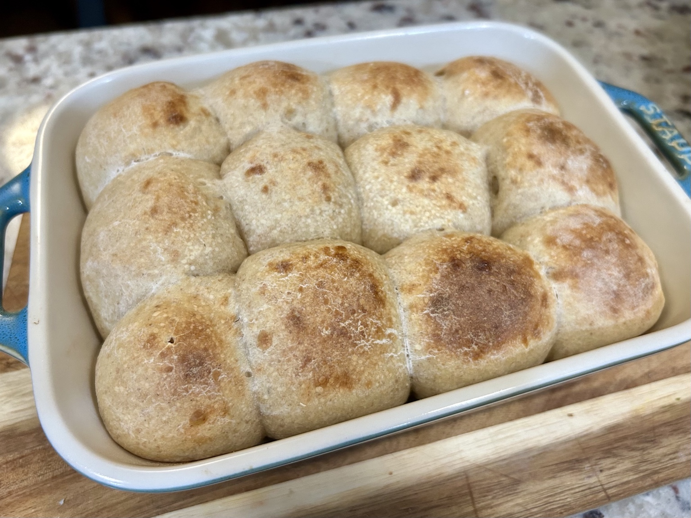
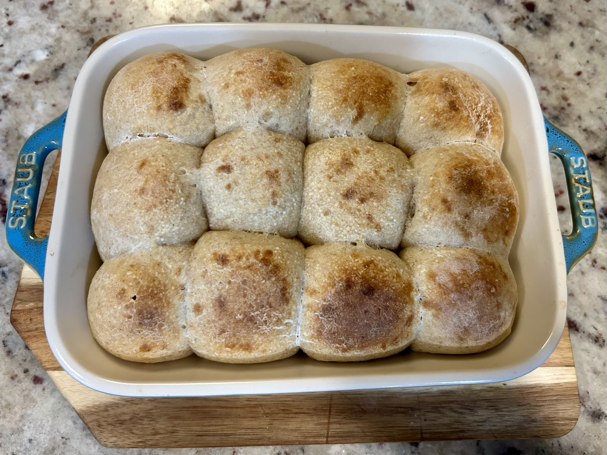
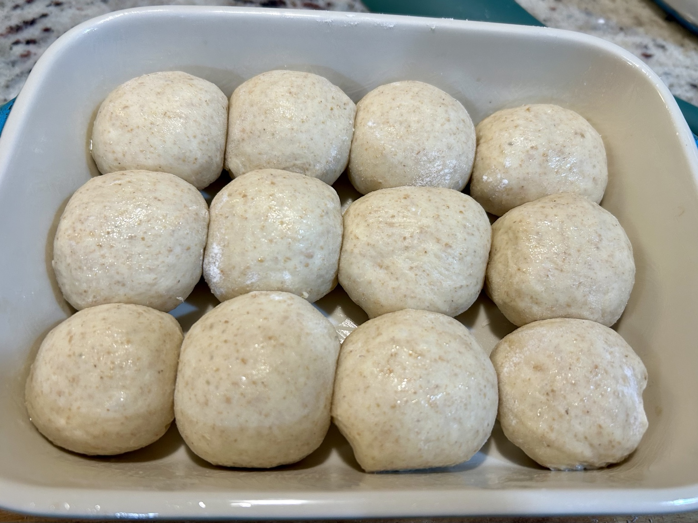

Bread
Soft Aloha-Style Dinner Rolls
Soft, barely sweet, pillowy pull-apart dinner rolls: my lighter take on an Aloha-style bun, with a little sourdough discard and Greek yoghurt for flavour and tenderness.




Ingredients
- 200 g sourdough starter discard (100% hydration)
- 600 g bread flour
- 100 g whole-wheat flour
- 240 ml skim milk
- 160 g plain 0% Greek yoghurt
- 2 eggs
- 30 g sugar
- 30 g olive oil or neutral oil
- 14 g salt
- 10 g instant yeast
- A little milk, for brushing
Method
- Mix the starter discard, milk, yoghurt, eggs, sugar and oil. Add the flours, instant yeast and salt, and combine into a soft dough.
- Rest for about 15 minutes, then knead for 8–10 minutes until elastic and relatively smooth. The dough should remain soft, not dry or heavily floured.
- Cover and let rise until roughly doubled. Divide and shape into smooth, tightly rounded balls, pinching the seams underneath.
- Lightly grease a rectangular baking dish. Arrange the rolls with small gaps between them so they can expand and eventually touch. Cover and proof for about 45–90 minutes, until noticeably puffy.
- Brush gently with milk. Bake at 350°F (175°C) until golden and baked through, usually 25–35 minutes for a closely packed stoneware dish. Start checking at 25 minutes and tent loosely with foil if the tops brown too quickly.
- Cool in the dish for 5–10 minutes, then move to a rack. Cover loosely with a clean towel while cooling if you prefer a soft crust.
Shaping and yield
This is the larger dough formula I used. It makes approximately two dozen 60 g rolls, depending on how the dough is divided. The photographed Staub dish holds twelve smaller rolls, roughly 50 g of dough apiece; the rest of the batch can be baked separately or used for other soft bread shapes.
Notes
These are Aloha-style rather than traditional Hawaiian sweet rolls: soft and slightly sweet, but deliberately lighter, with Greek yoghurt, skim milk and a little whole wheat instead of a heavily enriched dough. The sourdough discard contributes flavour; the added yeast provides a dependable rise. Their most satisfying feature is the pull-apart crumb, especially while still slightly warm.